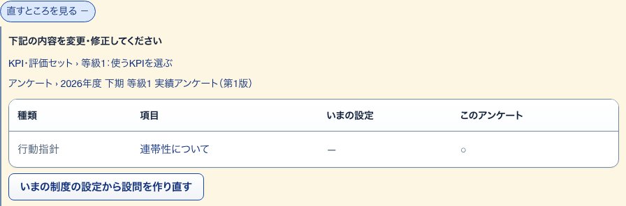
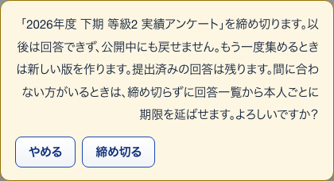
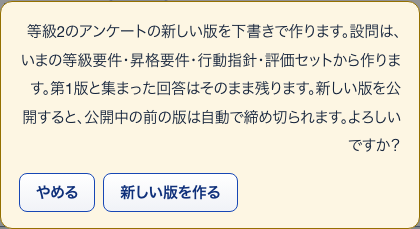
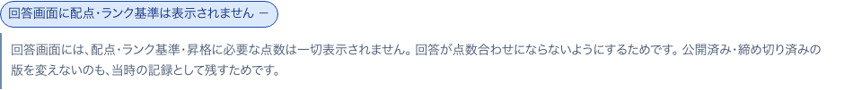

23評価項目とのズレ開いて見る
S28 アンケート ・ 押すもの: 「直すところを見る」

中に出るもの
- 下記の内容を変更・修正してください
- 直す先のページへのリンク
- いまの設定とこのアンケートの項目の比べ（種類・項目・いまの設定・このアンケート）
- 直すためのボタン1つ
- 注記
中で押せるもの
- 使うKPIを選ぶ: 使うKPIを選ぶへ移る（→ S18）
- アンケート › 題名: そのアンケートの組み立てへ移る（→ S29）
- 表の項目名: 等級要件・行動指針・KPI項目へ移る（→ S14 / S16 / S21）
- いまの制度の設定から設問を作り直す: 確認ののち設問を作り直す
- この等級だけ新しい版の下書きを作る: 確認ののち下書きを作る
- 第N版の下書きを開く: 後の版へ移る（→ S29）
- 「…」の聞き方を決める: KPI項目へ移る（→ S21）
24コピーの知らせ押したあとに出る
S28 アンケート ・ 押すもの: 「コピー」
中に出るもの
- コピーしました
25締め切る確かめる小窓
S28 アンケート ・ 押すもの: 「締め切る」 ・ 閉じる: やめる

中に出るもの
- 「（題名）」を締め切ります。以後は回答できず、公開中にも戻せません。
- もう一度集めるときは新しい版を作ります。提出済みの回答は残ります。
- 間に合わない方がいるときは、締め切らずに回答一覧から本人ごとに期限を延ばせます。
中で押せるもの
- 締め切る: 受付を止める
- やめる: 小窓を閉じる
26新しい版を作る確かめる小窓
S28 アンケート ・ 押すもの: 「新しい版を作る」 ・ 閉じる: やめる

中に出るもの
- （等級）のアンケートの新しい版を下書きで作ります。
- 設問は、いまの等級要件・昇格要件・行動指針・評価セットから作ります。
- 前の版と集まった回答はそのまま残ります。新しい版を公開すると前の版は自動で締め切られます。
中で押せるもの
- 新しい版を作る: 次の版の下書きを作る
- やめる: 小窓を閉じる
27回答画面に出ないもの開いて見る
S29 アンケートの組み立て ・ 押すもの: 「回答画面に配点・ランク基準は表示されません」

中に出るもの
- 回答画面には、配点・ランク基準・昇格に必要な点数は一切表示されません。
- 回答が点数合わせにならないようにするためです。
- 公開済み・締め切り済みの版を変えないのも、当時の記録として残すためです。